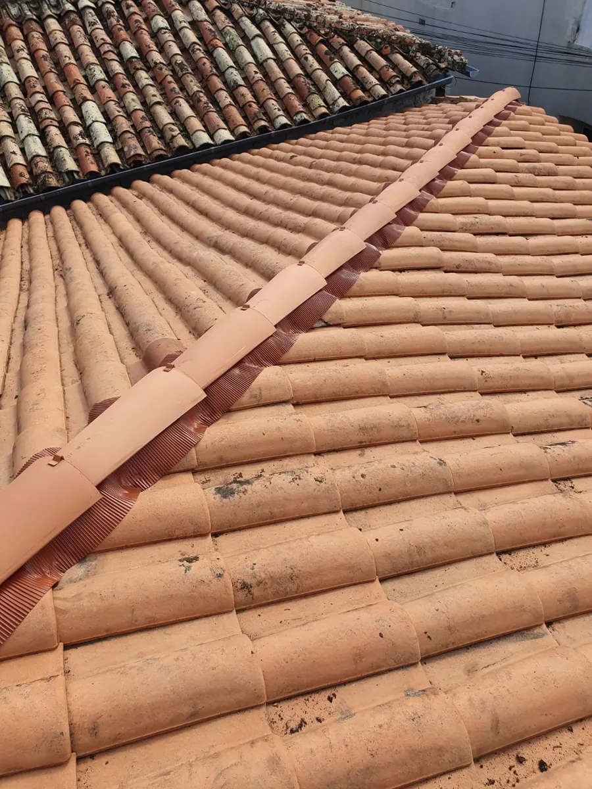
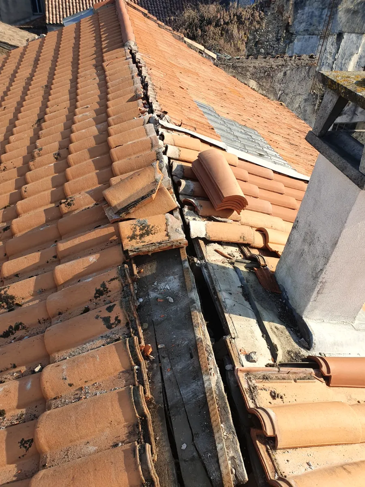
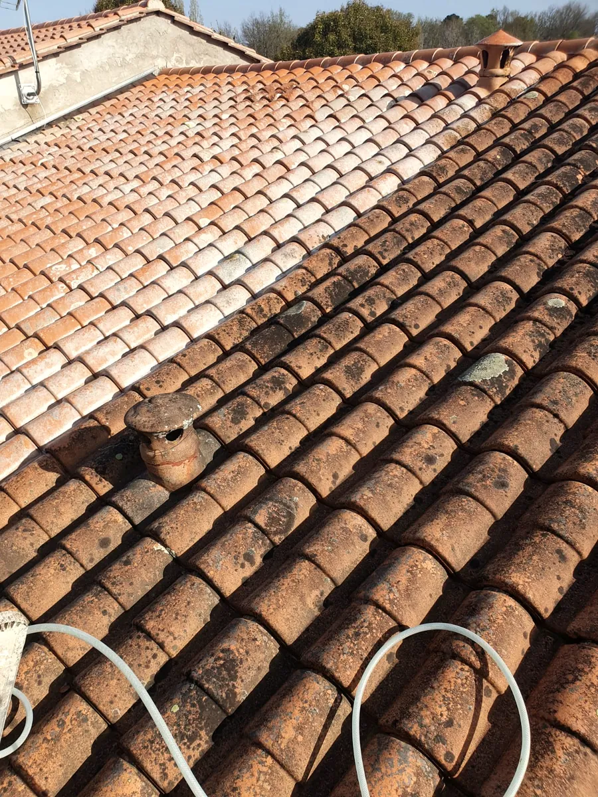
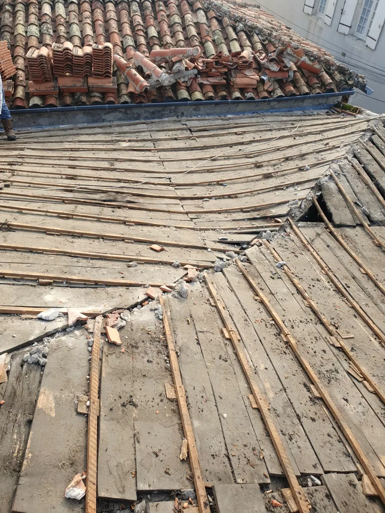
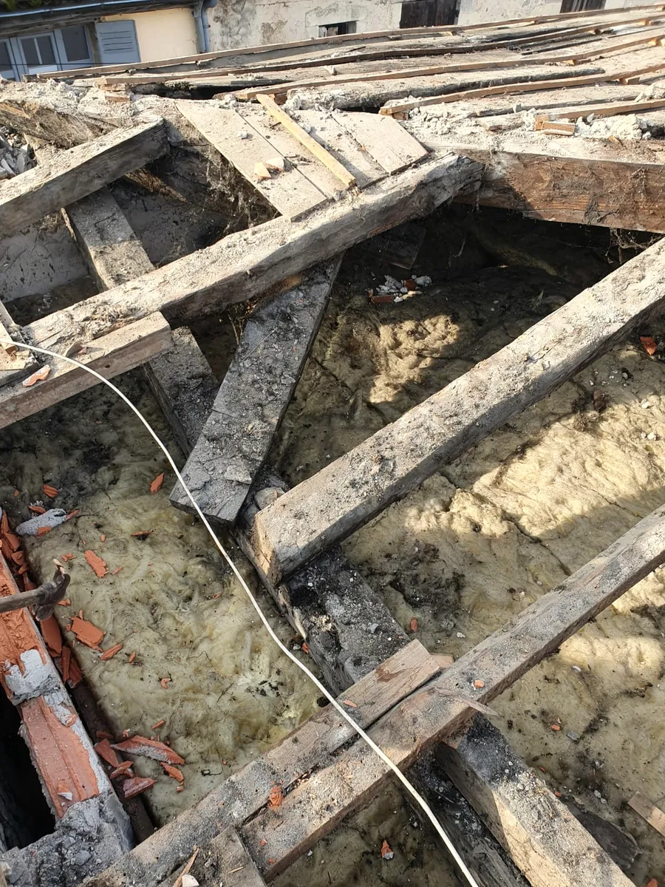
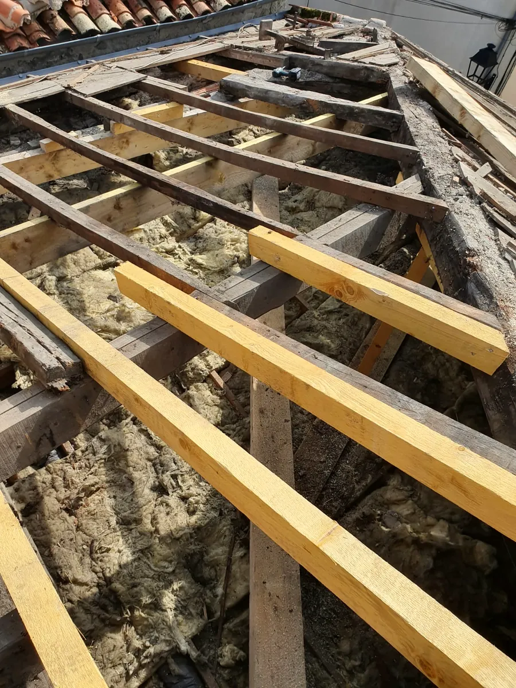
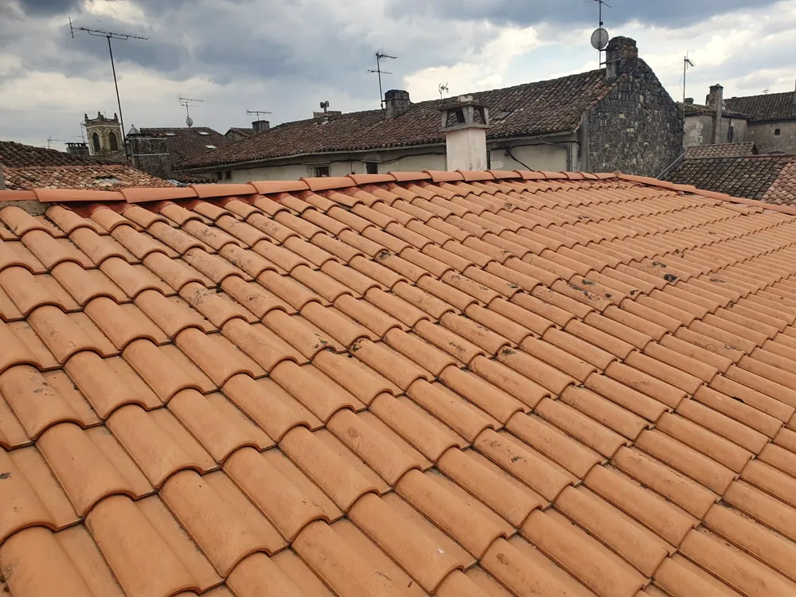
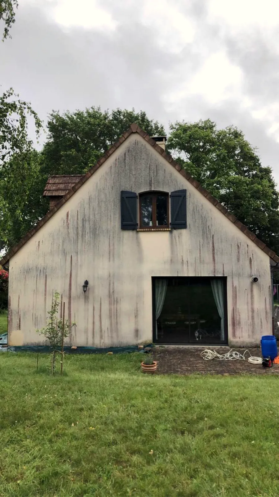
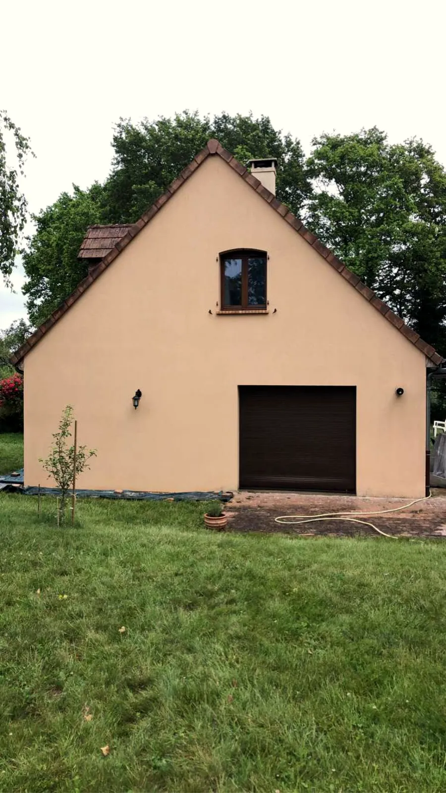
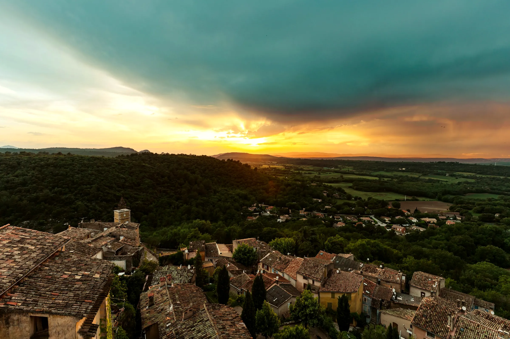

Bien couvert.
Couverture, charpente, démoussage et façades autour de La Réole. Un artisan couvreur, installé à Loubens.
Du faîtage à la façade.
Les photos sont celles de ses chantiers. Celui qui vous fait le devis est celui qui monte sur le toit.

Couverture
Réfection complète ou partielle, tuiles canal et romanes, faîtages et rives.
Voir la couverture
Fuites et zinguerie
Solins, rives, gouttières. On cherche l’entrée d’eau avant de réparer.
Voir les réparations
Démoussage
Nettoyage des tuiles, antimousse et hydrofuge.
Voir le démoussageUn toit à La Réole, de la dépose aux tuiles.
Sous les tuiles, les bois avaient pris l’eau. Peter les a remplacés avant de recouvrir.
- 01

Dépose. Les tuiles enlevées, les voliges apparaissent.
- 02

Diagnostic. Les bois abîmés sont repérés un par un.
- 03

Charpente. Chevrons neufs, posés au niveau.
- 04

Couverture. Tuiles canal et faîtage neufs.
Avant, après.
Un pignon noirci par les salissures, nettoyé, traité puis repeint. Même maison, même angle.


Devis gratuit.
Laissez votre numéro, Peter vous rappelle pour en parler et passer voir le toit.
Ou appelez directement06 78 44 61 09- Gratuit et sans engagement
- Pas de démarchage : c’est vous qui demandez
- Un seul interlocuteur, du devis au chantier
« Travail de qualité dans le rendu et dans la ponctualité. »
Un artisan, un numéro.
Up Rénovation 33, c’est Peter Urrutia, couvreur installé à Loubens, à cinq minutes de La Réole. Il vient voir, il chiffre, il fait le chantier. Vous avez le même interlocuteur du premier appel à la dernière tuile.
- 0 €
- le devis, sur place ou sur photos
- 5,0
- sur Google, travail soigné et ponctuel
- 2009
- année de création de l’entreprise
Autour de La Réole.
Choisissez une commune pour voir la distance depuis Loubens.
- Moins de 20 kmLa RéoleMonségurSauveterre-de-GuyenneMeilhan-sur-Garonne
- 20 à 40 kmLangonMarmandeBazasSaint-MacaireCadillacDuras
- Plus loinGironde, Lot-et-Garonne et nord des Landes, selon le chantier
Questions fréquentes.
Combien coûte une réfection de toiture ?
Cela dépend de la surface, de la pente, du type de tuile, de l’accès et surtout de l’état des bois en dessous. C’est pour cela que Peter regarde vos photos ou passe avant de donner un prix. Le devis est gratuit.
Quand faut-il démousser un toit ?
Dès que la mousse retient l’eau entre les tuiles. Le traitement se fait par temps sec, au printemps ou à l’automne. Un hydrofuge appliqué ensuite ralentit le retour des mousses.
J’ai une fuite, que faire en attendant ?
Placez un récipient sous l’écoulement, coupez l’électricité de la pièce si l’eau approche d’un point lumineux, et appelez Peter. Ne montez pas sur le toit, surtout mouillé.
Vous intervenez jusqu’où ?
Surtout autour de La Réole, Langon, Marmande et dans l’Entre-deux-Mers. Peter se déplace aussi dans le reste de la Gironde, en Lot-et-Garonne et dans le nord des Landes selon le chantier.
